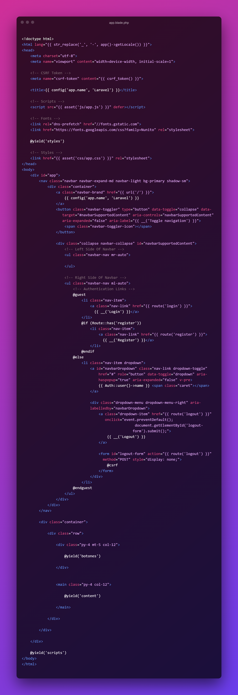
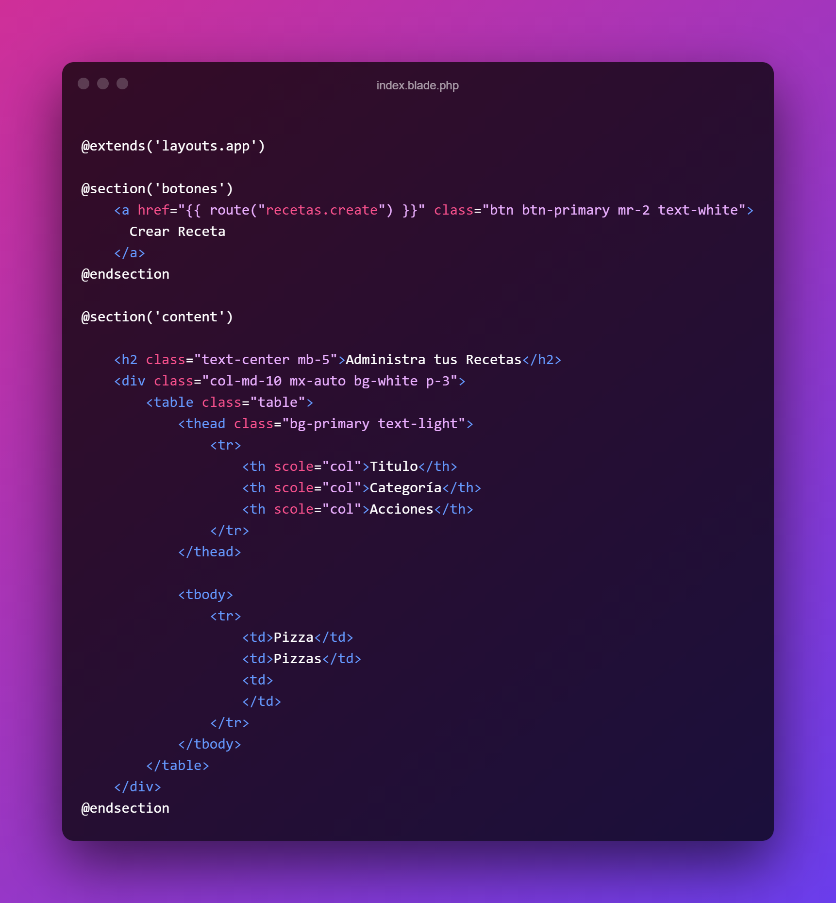

Instalando Composer

Instalando Laravel

Creando un Proyecto en Laravel

Artisan CLI

Crear Controladores con Artisan CLI

Conectando a MySQL nuestro proyecto Laravel
.png)
Entendiendo Mejor nuestro proyecto
.png)
Routing y Controladores
.png)
Laravel Invokable Controller

Vista Recetas

Pasar Informacion del controlador a la Vista Recetas

Login y Autenticacion

Ejecutar Migraciones

Añadir Bootstrap y VUE

Modificar Estilos
.png)
Añadir Usuarios a la BD
.png)
Añadir Campos Extras al Formulario
 Formulario
Formulario
.png) Validar Y Pasar Datos a la BD
Validar Y Pasar Datos a la BD

Reedirecionar a otra pagina cuando te registras

¿Que son los Resources Controller?

¿Como Crear una Migracion, modelo y controlador?

Trabajando con el metodo index
 app.blade.php
app.blade.php

index.blade.php

Alias para Botones

Creando el formulario de Registro de Recetas
.png) Validar Inputs desde la Vista
Validar Inputs desde la Vista

Registramos la ruta para almacenar las recetas

Guardando en la BD

Validar Formularios desde el Controlador

Traduciendo Laravel al Español

Url's Protegidas en Laravel

Creando mas Campos Restantes para el formulario de registro de recetas

Los Seeds

Segundo Seed

Enviando las categorias de la BD al Formulario

Mantener la seleccion de categoria en la validacion

Añadiendo Trix Editor

Añadiendo Campo Imagen

Agregando los campos a la bd excepto la imagen

Almacenar Imagenes en el Servidor

Cambiar de tamaño las imagenes con Intervention Image

¿Que es un ORM? y Eloquent el ORM de Laravel

Creando una relación 1n entre Usuarios y Recetas

Obtener las Recetas creadas por un usuario con Eloquent

Creando un Modelo para las Categorías

Creando una relación 11 entre recetas y categorías

Guardando Recetas con Modelo